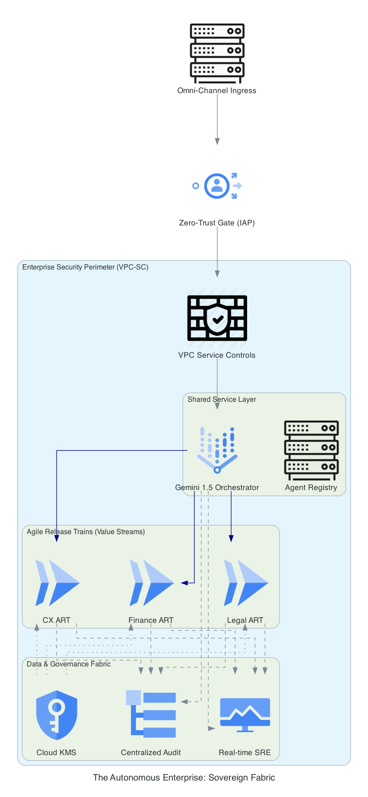

A multi-agent "System of Systems" engineered on Google Cloud. We transform legacy silos into a self-governing intelligence fabric using Gemini, Vertex AI, and a Zero-Trust sovereign landing zone.
Google Cloud isn't just a host for this system; it is the Reasoning Substrate. By leveraging Gemini 1.5 Pro's long-context window (2M tokens) and Vertex AI's agentic orchestration, the Autonomous Enterprise achieves Operational Autonomy. This architecture proves that AI can safely handle complex financial, legal, and operational workflows when wrapped in bank-grade security perimeters.
The Interaction Layer. Multi-modal agentic orchestrator resolving Tier-1 inquiries with Gemini Flash.
Technical Deep-Dive →The Optical Nerve. Serverless vision pipeline transforming unstructured blobs into structured financial data.
Technical Deep-Dive →The Logic Engine. RAG-powered reconciliation ensuring 100% revenue integrity across global contracts.
Technical Deep-Dive →Every asset in the AE Suite inherits this Unified Security Perimeter. This "Golden Path" architecture answers the core Google interview question: "How do you secure LLMs at scale?"
We move beyond Day 1 deployment to ensure long-term stability, cost-efficiency, and model safety.
| Operational Pillar | Governance Strategy (No Blind Spots) | Google Tech Stack |
|---|---|---|
| FinOps Maturity | Scale-to-Zero architecture ensuring costs only incur during active reasoning events. Budget alerts linked to Cloud Functions for automated kill-switches. | GCP Billing API, Cloud Run |
| MLOps & CE | Continuous Evaluation (CE) loops comparing agent responses against "Golden Ground Truth" sets to detect hallucinations in real-time. | Vertex AI Evaluation |
| SRE Observability | Sub-second monitoring of agentic handoff latency and token consumption metrics. | Cloud Monitoring / Looker |
| Compliance Audit | Immutable audit logs capturing the "Reasoning Trace" for every AI decision, meeting global regulatory transparency standards. | Cloud Logging / BigQuery |
This isn't just code; it's a Strategic Business Asset. It demonstrates the ability to manage a $10M+ GCP landing zone while delivering immediate AI business value across disjointed business units.